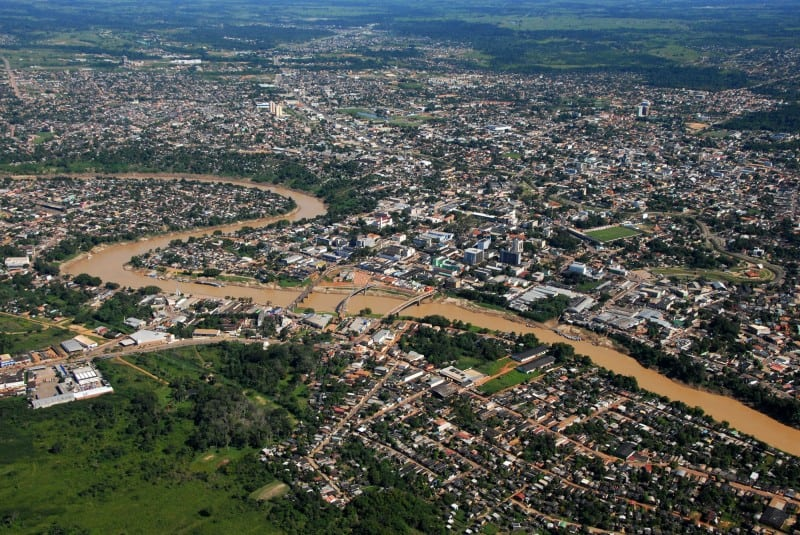

O estado do Acre, com uma população de cerca de 880.631 habitantes (segundo estimativa do IBGE de 2024), é conhecido por sua rica diversidade cultural, influenciada pela história da borracha e pela fronteira com a Bolívia e o Peru. Uma curiosidade interessante é a sua densidade demográfica, sendo um dos estados menos populados do Brasil. O nome "Acre" tem origem indígena, referindo-se a um rio, e sua história é marcada pela Revolução Acreana, um movimento que lutou pela autonomia da região
